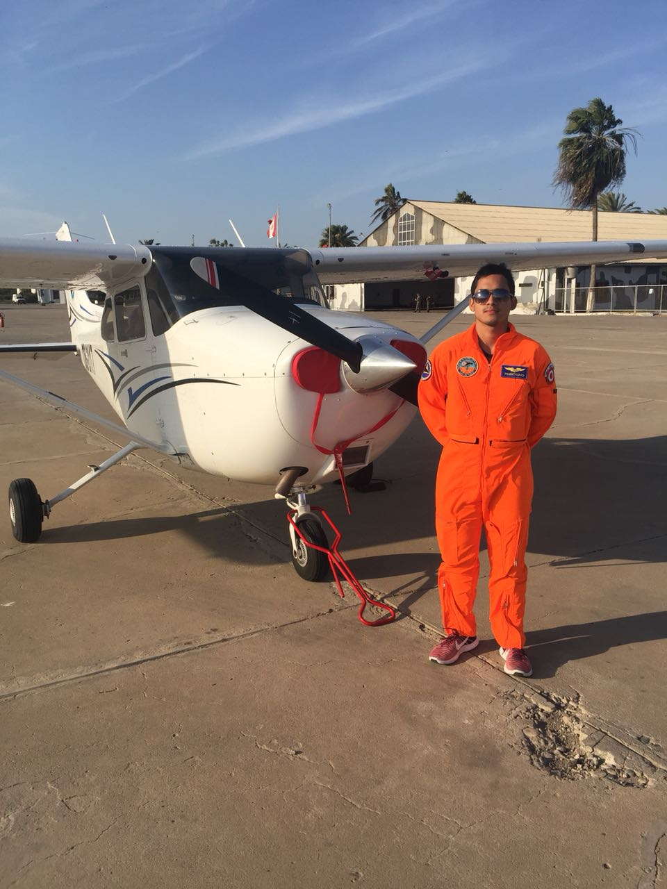
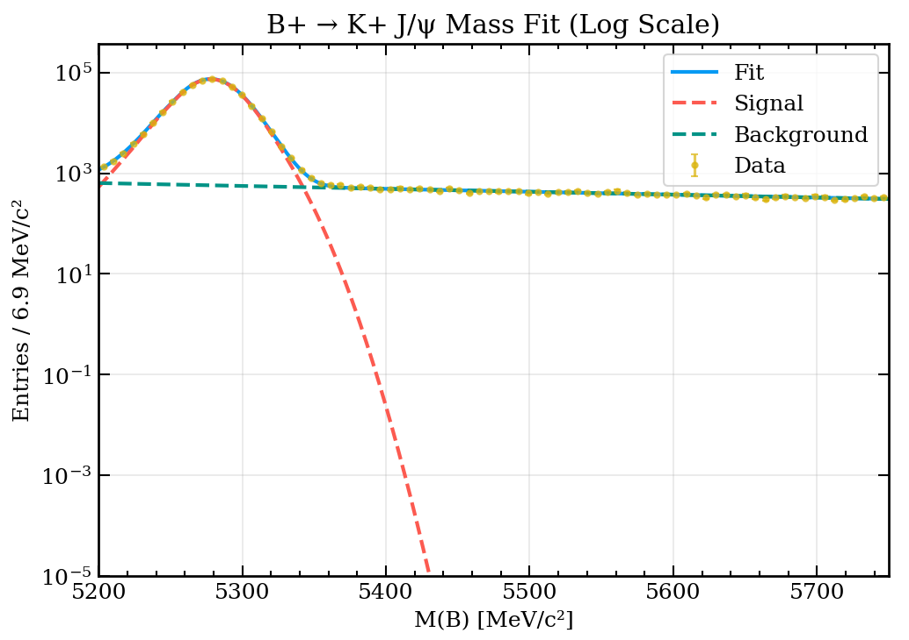
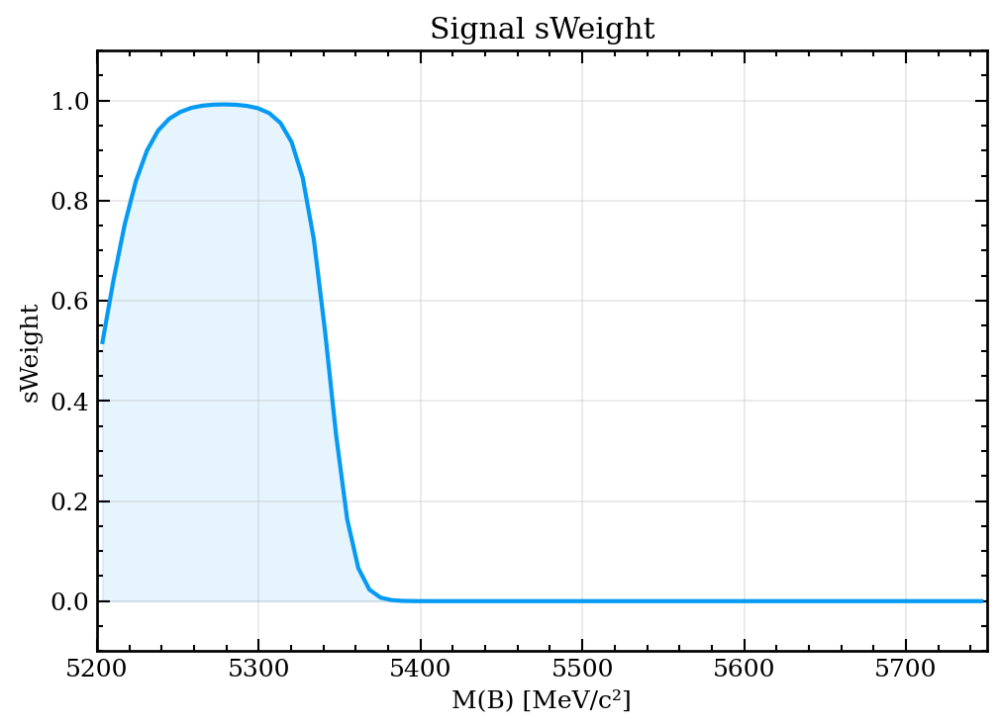

I am a final-year Physics student at the University of Bristol and a Mechanical Engineering graduate from UTEC, Peru. My interests are in flavour physics, CP violation and precision measurements that test the Standard Model.
I work with the UTEC LHCb team on Run 3 particle identification calibration and B-meson decays. At Bristol, my final-year project explores the interpretability of machine-learning models for the CMS Level-1 Trigger at the HL-LHC.
My research has taken me to the University of Alberta, KAUST and IFJ PAN, from turbulent plumes and laser diagnostics to tau polarisation in Belle II. I enjoy using computation to understand experimental data and the physics behind it.
Science beyond the laboratory
Puentes hacia la Ciencia
I founded a practical science initiative for school students in Peru, helping them explore physics and engineering by building their own projects.
Machine-learning interpretability for particle physics triggers
Tau polarisation in semitauonic B decays
High-temperature spectroscopy
Computational fluid dynamics (CFD)
Shock tube / detonation tube characterization
Publications & Conferences
Farouki, I., Chouchen, K., Piminchumo Sausa, A., et al. (2025). Design and Testing of a Laminar Flow Windows High-Temperature Optical Cell. JQSRT, 109565. DOI ↗
Subburaj, J., Piminchumo Sausa, A. R., & Farooq, A. (2025). A Combustion-Driven Miniature Shock Tube. AIAA SCITECH 2025, 2141. DOI ↗
Subburaj, J., Ngo, T., Piminchumo Sausa, A. R., & Farooq, A. (2024). Combustion Characteristics in a Miniature Detonation Tube. AIAA SCITECH 2024, 0586. DOI ↗
Piminchumo Sausa, A. R., Li, S., Kaye, N. B., & Flynn, M. R. (2023). The coalescence of adjacent turbulent plumes. Environmental Fluid Mechanics, 1-29. DOI ↗
Flynn, M., Li, S., Kaye, N., & Piminchumo Sausa, A. (2023). Plume merger. Bulletin of the APS.
Subburaj, J., Piminchumo Sausa, A. R., & Farooq, A. (2026). Characterization of a Miniature Diaphragmless Shock Tube. Shock Waves (in process).
Education
University of Bristol
BSc Physics — in progress, September 2024–June 2027
Relevant final-year units: Particle Physics; Advanced Computational Physics & Machine Learning; Advanced Classical Mechanics. Auditing Quantum Field Theory (attendance only; not assessed).
Universidad de Ingeniería y Tecnología (UTEC)
Mechanical Engineering Lima, Peru · GPA: 15.6/20. Exchange programme at Colorado School of Mines.
Colorado School of Mines
Exchange Programme – Mechanical Engineering
Studied advanced mechanics, thermodynamics, and CFD in the USA.
Private Pilot License – Escuela de Aviación Civil del Perú
2nd place in class

Cessna – where everything started
Where everything started
The first time I sat in a Cessna, I realized physics wasn't just equations on a blackboard — it was lift, drag, thrust, and weight working together in perfect balance. That feeling of takeoff, the hum of the engine, the instruments coming alive… that's when I truly understood the principles of machines and applied physics.
Learning to fly taught me intuition for aerodynamics, control systems, and the beautiful intersection between theory and real-world engineering. It remains my favourite place — not just in the sky, but in my journey as a scientist.
Work Experience
Research Experience
Final-year project — CMS trigger interpretability
University of Bristol
September 2026–present
Interpretability of machine-learning models for the CMS Level-1 Trigger at the HL-LHC, supervised by Professor Sudarshan Paramesvaran. I use SHAP to study how constituent features influence jet classification, including impact parameter and differences between b and gluon jets.
Research collaboration — UTEC LHCb team
LHCb Experiment, CERN · Hybrid
March 2026–present
Contributed as a member of the PID calibration team for the LHCb experiment, focusing on Run 3 data
Conducted studies on rare decays B⁺ → K*⁰ K⁺ and B⁺ → φ K⁺
Research Intern
The Henryk Niewodniczański Institute of Nuclear Physics, Polish Academy of Sciences (IFJ PAN), Cracow, Poland · On-site · Full-time
6–31 July 2026 · Continued collaboration
Analyzed Monte Carlo simulated data for B⁰ → D*⁻ τ⁺ ντ decays using Python and ROOT, and developed a Boosted Decision Tree (BDT) with AdaBoost for signal-background separation
Studied the reconstruction resolution of the T-odd triple product (sensitive to transverse tau polarization and CP violation), identified and corrected biases in online reconstruction, and scaled the expected sensitivity for future Belle II luminosities (up to 50 ab⁻¹)
Research Intern
King Abdullah University of Science and Technology (KAUST), Thuwal, Saudi Arabia · On-site · Apprenticeship
May 2023 - Nov 2023 · 7 mos
Participated in laboratory safety and spectroscopy training, acquiring essential knowledge for scientific research
Participated in a laser diagnostic project involving high-temperature methane measurement
Utilized Schlieren imaging in a detonation tube project to analyze shockwaves and estimate detonation energy
Performed tests using CW and DFB lasers for infrared spectrum measurements in laser diagnostics
Developed MATLAB codes to analyze experimental data, enhancing data processing and interpretation capabilities
Research Intern
University of Alberta, Edmonton, Canada · On-site · Internship
Aug 2022 - Dec 2022 · 5 mos
Conducted theoretical investigations on the merging behaviour of turbulent plumes using the curvature model developed by Dr Morris Flynn's research team at the University of Alberta
Utilized MATLAB to assess the conduct of turbulent plumes in both stratified and unstratified environments
Gained proficiency in theoretical modelling techniques and developed expertise in analyzing plume behaviour
Collaborated with a research team to produce valuable insights into the behaviour of turbulent plumes in different environments
Additional Experience
Senior Teaching Assistant - Fluid Mechanics
UTEC - Universidad de Ingeniería y Tecnología, Lima, Peru · On-site · Part-time
Apr 2024 - Jul 2024 · 4 mos
Tutor
COMPOS, Oxfordshire, England, United Kingdom · Remote · Part-time
October 2025–present
Provided tutoring in mathematics and physics, covering topics including mechanics, Taylor series, electrostatics, harmonic oscillators, and other foundational concepts in university-level physics and mathematics.
Awards & Scholarships
Think Big Scholarship – University of Bristol (2024): £13,000 per year for three years, plus a £3,000 Science bursary (£42,000 total)
Santander Skills Scholarship – Harvard Business Publishing (2023)
Emerging Leaders in the Americas Program (ELAP) Scholarship (2022): CAD $8,200 for research at the University of Alberta
IEC Young Professional – INACAL (2020)
National Champion – Brazilian Jiu-Jitsu (2015, 2016)
Software Projects
sWeights for Muon PID Calibration (B⁺ → K⁺ J/ψ)
sWeights are a statistical tool used in high-energy physics to
separate signal from background in a mixed sample. Using a control variable
(typically mass), sWeights assign statistical weights to events,
allowing signal distributions to be estimated for variables uncorrelated with the fit variable within each component
(such as PID response). This is particularly important for Muon
Identification (MuonID) calibration, where we need to measure the
efficiency and misidentification rates using clean signal samples.
This code is an adaptation of the original
pidcalib-sweight-fits
package developed by Michele Atzeni. The original framework
provides sWeight fits for various PID calibration channels. This adaptation
focuses specifically on the B⁺ → K⁺ J/ψ (→ μ⁺μ⁻) decay,
which serves as an alternative muon PID channel for Run 3
of the LHCb experiment.
The B⁺ → K⁺ J/ψ channel is particularly well-suited for muon identification
studies because:
The J/ψ → μ⁺μ⁻ decay provides a clean muon pair with known mass
The B meson mass peak (5279 MeV) is well-separated from background
High statistics available in Run 3 data
Independent cross-check for muon PID efficiency measurements
The signal shape is modeled using a Double-sided Crystal Ball
function, which accounts for the asymmetric tails of the B⁺ peak due to final
state radiation and detector effects. This provides a more accurate description
than a simple Gaussian, resulting in better sWeight extraction.

Figure 1: B⁺ → K⁺ J/ψ mass fit with Double Crystal Ball
signal shape (green) and exponential background (blue). The fit achieves
χ²/ndof = 1.41, indicating excellent agreement with data.

Figure 2: sWeight as a function of the B meson mass.
These statistical weights come from the mass fit and are used to subtract background in distributions of other variables. They can be negative or greater than one; they are not event-by-event signal probabilities.
Building bridges to science through curiosity, teamwork and practical projects.
I founded Puentes hacia la Ciencia to give school students in Peru an opportunity to explore physics and engineering through experiments they can build themselves. Our first pilot programme took place at IE 10146 Nuestra Señora del Carmen, in El Arrozal, Motupe, Lambayeque.
18school students
4project groups
S/700pilot investment
The first pilot programme received an investment of 700 Peruvian soles, covering materials, preparation and prizes. Students from the third to fifth years of secondary school worked with basic circuits, DC motors and sensors, practised soldering, and built projects in small groups.
The pilot programme at Nuestra Señora del Carmen, El Arrozal, Motupe.
Pilot programme winners
The results of the scientific challenge, “¿Cómo funciona nuestro circuito?”, were announced on . The awards recognised the projects and how clearly the teams explained what they had learned.
First place · S/200 prize
A motor-driven car
Jose Yeremi Alejandro Togas Bayron Jesús López Paz Maicol Alexandro Ticlahuanca Ticlahuanca
Recognised for their car project, the clarity of their scientific explanation and how they shared their learning, including a difficulty they faced during construction.
We also recognised Miguel Angel Garcia Huaman and Maria Guadalupe Garcia Cueva for their helicopter project and for demonstrating how it worked in their video.
We plan to hold monthly webinars in Spanish, bringing together people from different STEM fields to share their experiences, introduce their areas of work and discuss opportunities in science, technology, engineering and mathematics.
Next webinar · In Spanish
Cosmology with Kristina Slaba
Kristina is from Odesa, Ukraine, and is studying for a BSc in Physics at the University of Bristol.
Time and joining details to be announced.
Be part of Puentes hacia la Ciencia
Would you like to speak at a webinar or collaborate on Puentes hacia la Ciencia 2027? I would be glad to hear from you. Spanish is required for webinar speakers.